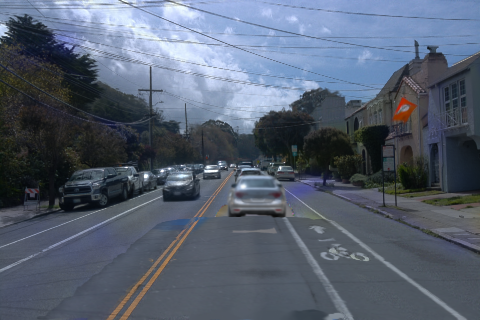
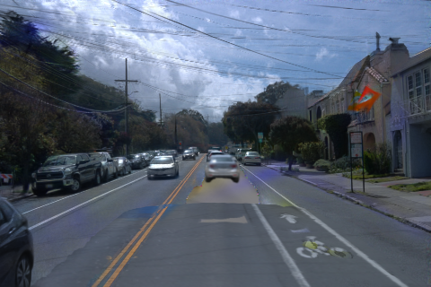

v44：当前车体资产与 RCR-1 去蓝背景接入
当前阶段：代码接线与 CPU 预检；新组合尚未 GPU 渲染。
远端 SSH 可用，当前 CUDA 设备数为 0。没有新 v44 画质指标、没有训练和自动电源操作；以下图片是历史证据。
实际远端 CPU 输入预检通过；相机、轨迹、道路行号与当前资产兼容性已检查。GPU 光栅器和画质仍待验证。
可以接入，但去蓝方法修改的是原生场景训练与配套道路接管，不能只往车体资产上加一个颜色滤镜。v44 保留当前 C2／RGBA／SurfaceLOD 车体，使用 RCR-1 已保存的联合 RGB×1 原生 10K、匹配道路 1K 与 gates，并明确迁移原有世界坐标颜色场。
异常评估
| 现象 | 已有证据 | v44 的处理与边界 |
|---|
| 蓝紫色道路、局部颜色割裂 | RCR-1 在原生 10K 补回联合 RGB×1；历史旧 M2 配对中，raw113 原框绝对蓝色误差 0.084625→0.003897，raw137 右斑 0.074090→0.004888。用户已采用该去蓝结果。 | 复用已有原生 10K 与它自己的新道路、行号和 gates。新车体会改变遮挡，历史数字不能冒充 v44 效果。 |
| 车底／车后银灰亮片 | 历史 raw137 的 315 亮点中，静态 premultRGB 净亮化约 +0.3311；环境×T 约 −0.19285；a6／a37 为 0，道路接近 0。环境×T 仍含车形结构；这些点在既有道路接管范围外。 | 去蓝未解决该项。新组合输出同一次排序下各层真实 RGB 与 alpha×T，先复查静态层与环境；不扩车体或任意删高斯掩盖亮片。 |
| 既有暗团／阴影样斑块 | 此前 raw105 暗核主要为近道路的黑色旧静态前缀，raw113 底边暗核主要为道路基底 RGB；没有独立物理投影阴影层。 | 保留为独立问题，不把银亮片、暗团和蓝斑合成一个成因，也不宣称换车体已经修复背景。 |
历史道路 target 是跨时刻重观测 proxy，始终遮挡区域没有独立删车 RGB 真值。315 亮点是旧版本诊断选区，不作为新版本评价分母。
历史图像证据：去蓝能力与亮片代价
前两列为同一旧 M2 的历史配对；第三列展示当前车体与旧背景。第三列与前两列车体不同，不能据此把差异归因于单项修复。真正 v44 对照将在保持当前车体完全一致后生成。
raw113 · 原始 480×320 PNG
历史配对：RCR-1 采用前／旧 M2 历史配对：RCR-1 去蓝后／同一旧 M2
历史配对：RCR-1 去蓝后／同一旧 M2 当前车体／旧背景（尚未接去蓝）
当前车体／旧背景（尚未接去蓝）
raw137 · 原始 480×320 PNG
历史配对：RCR-1 采用前／旧 M2 历史配对：RCR-1 去蓝后／同一旧 M2
历史配对：RCR-1 去蓝后／同一旧 M2 当前车体／旧背景（尚未接去蓝）
当前车体／旧背景（尚未接去蓝）
接线规则
- 版本独立：运行入口、契约、输出和代码统一使用 v44；RCR-1 是去蓝组件来源，v43 及更早现场不覆盖。
- 车体保持：canonical 资产 45,314 行，C2 后验与固定 RGBA 不训练；SurfaceLOD 按相机采样，保留／删除状态共用同一车体数据。
- 背景完整成套：新原生模型必须配它自身重建的道路 1K、contributors 与 gates；预检拒绝旧静态行号串入新模型。
- 色场边界：原 11×9 色场在旧 M2 联合场景校准。首版仅作冻结世界坐标残差迁移，保留源绑定及新绑定；没有伪称重新标定。
- 成像一致：原生 a6 从输入物理移除；所有剩余层进入同一次 native Gaussian 深度排序，删除操作只移除 a37，不切换背景旁路。
GPU 恢复后的最小验证
先 raw105、113、130、137 的双状态小对照，通过工程检查后再完整 49 帧。两组都使用当前同一车体：当前背景 vs v44 去蓝背景；固定原始可见 a6／a37、LiDAR 和道路候选域，报告误差、低覆盖点与逐层来源。保留天空、其他车辆与非目标区域的变化，不只检查蓝框。
本轮不重跑 10K，不训练 PVD，不重拟合车体，不启动道路生成模型。色场冻结迁移若出现问题，再单独登记相同方法的重标定对照，不暗中增加训练。
v44 成对渲染入口 · 独立运行时 · 输入契约 · CPU 预检收据 · 代码审查
当前车体完整 49 帧报告 · 既有暗斑诊断收据 · 历史银亮片归因